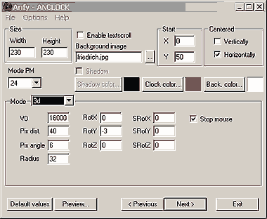
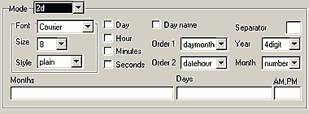
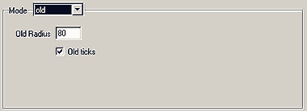

|
This applet shows a clock on the applet area. The user can choose
from three display modes: 2d, 3d and "old" style clock.
[For more technical
information about the available parameters, click here.]
Most parameters are self-explanatory and you can
always see brief description of each parameter by moving the mouse
pointer over the wizard.

Basic Settings
Define the applet's Width and Height,
and select Enable Textscroll option, if you think it's appropriate.
You may specify the Background Image. You could Vertically
or Horizontally center the clock by selecting respective
box. You could select both. Or, you could define the XY position
of the clock at Start XY. Next, select Clock Color
and Shadow Color. If the Background Image is absent, select
the Background Color too. Note that in 3D clock mode, BGC
is used to render far colock parts.
There are three clock modes: 3D, 2D, and Old. The
12/24 hs switch is valid for both 2D and 3D clocks. This
can be set in Mode PM menu.
3D Clock
The VD value is used to set the virtual distance
between the screen and the 3d clock. The Pixel Distance value
is used to set the distance between the pixels of the 3d clock,
while the Pixel Angle value sets the angle between the pixels
of the 3d clock. Define the Radius of the 3D Clock's outline
circle. RotXYZ represents the rotation speed of the clock
around XYZ axes. Optionally, you could set Initial Rotation Angle
for each axis. Stop Mouse option is present to stop/start
the animation when the user mouse-click the applet area.

2D Clock
Select Font, Size, and Style. Enter
the words for months, days and AM/PM in your language. Each string
must be separated by inserting "," between strings. Check
the boxes named Day, Hour, Minutes, Seconds, and Day Name,
if you desire to display. Unchecked value is hidden from the clock.
Then select the Orders of day and month, and date and hour.
Optionally, enter the character for each time value separation.
The suggested character is ":". The Year could
be either 4 digit or 2 digit. The Month may be in name, number,
or no display.

Old Clock
Set the Old Clock Radius value, and enable/disable
Old Ticks on the clock.
Proceed to the
expert menu, next.
|